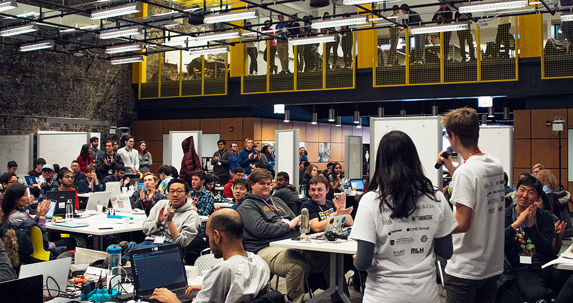

You’ll code—a lot. Some weeks, the problem won’t budge…until it does.
That click—the test passing, the screen rendering—is addictive.
Over time, you won’t just get better at coding; you’ll start to love the grind that gets you there.
You won't build alone.
CS is a team sport—pair programming, standups, code reviews.
Some meetings drag and merge conflicts sting, but shipping something together is a different kind of win.
You'll learn to trust each other and move faster as one.

You'll jump into hackathons—weekend sprints to build and demo fast.
Watch campus announcements or the CS club; sign up solo or with friends.
Teams form quickly: pick a problem and sketch a tiny MVP.
Mentors are around to help with scope, APIs, and blockers.
Expect rapid cycles: design → code → debug → demo.
The payoff: experience, community, and a solid portfolio project.